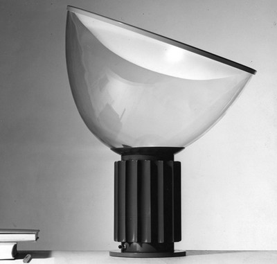

|  |
Table lamp providing reflected light 1958 Design: Achille and Pier Giacomo Castiglioni 1962 Production: Flos The lamp’s light source is concealed in the base to prevent direct blinding light. The light is reflected from a white convex metal disc supported by a clear glass paraboloid that rotates on a circular support so the light can be aimed in the desired direction with no need to fix it mechanically. The base, made of a chromed metal cylinder with holes at both ends, contains the socket for a 100 watt bulb and has a profiled cover varnished with heat resistant paint. The covering element has two functions: it prevents the light from shining out of the base and avoids contact with the very hot base, creating a cavity that favours a cooling flow of air. For the designers, this element is comparable to the radiator fins that cool engines.